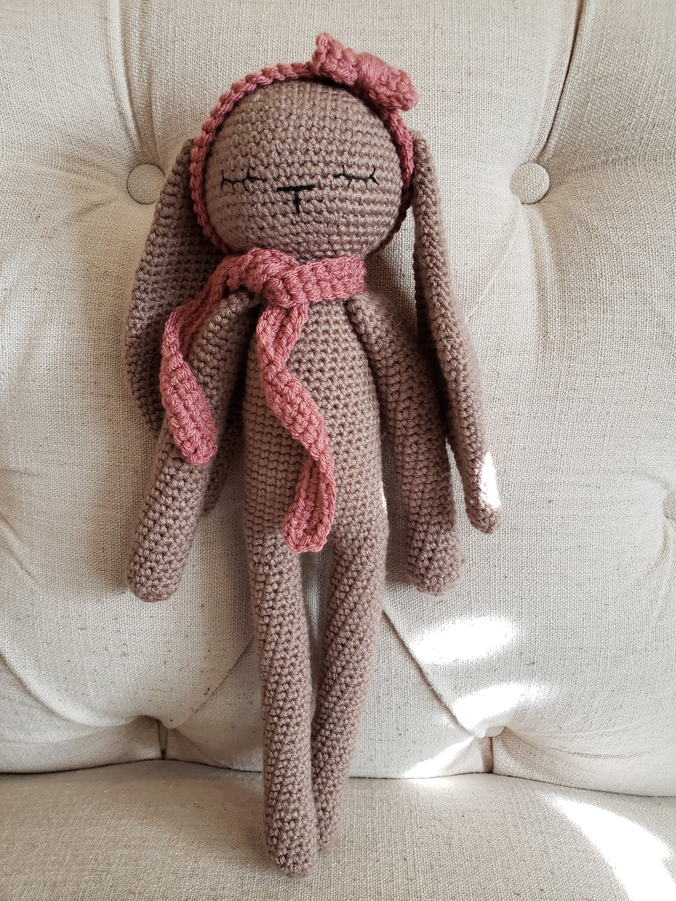

Crochet
I grew up playing with the crocheted doilies and Christmas ornaments made by my grandmother. Mamaw had every size hook possible, and she created some of the most intricate patterns. Probably the most notable would be Princess Diana's wedding gown for Barbie--Completely crocheted, down to the last detail. I still have the dress.
She taught me how to crochet as a girl, but I never did try it outside of our lesson. Around age 30, I became interested in learning. So, being impatient, I bought a hook and some yarn that I thought was pretty. I went to Pinterest and Youtube and started to find anything out there for beginners. But this didn't really work for me. I was not able to grasp what was actually happening between my hand, the hook, and the yarn. The next time I traveled home, I brought my materials to my grandmother and asked her to teach me again. This time I latched on, and it made so much sense having her guide my movements as I learned. It was all I needed!
My Projects
-

Sleepy Bunny
This precious bunny was a gift to one of my nieces when she was born.